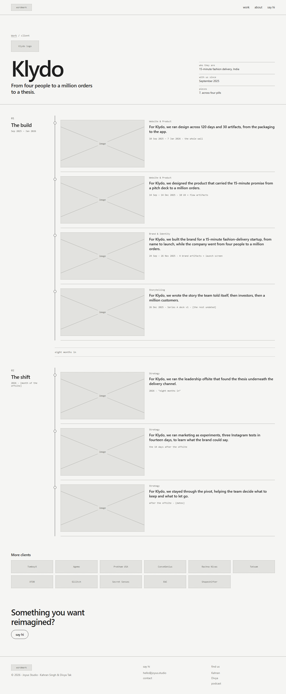
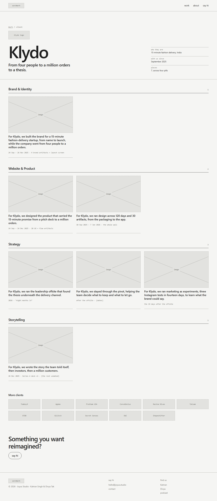
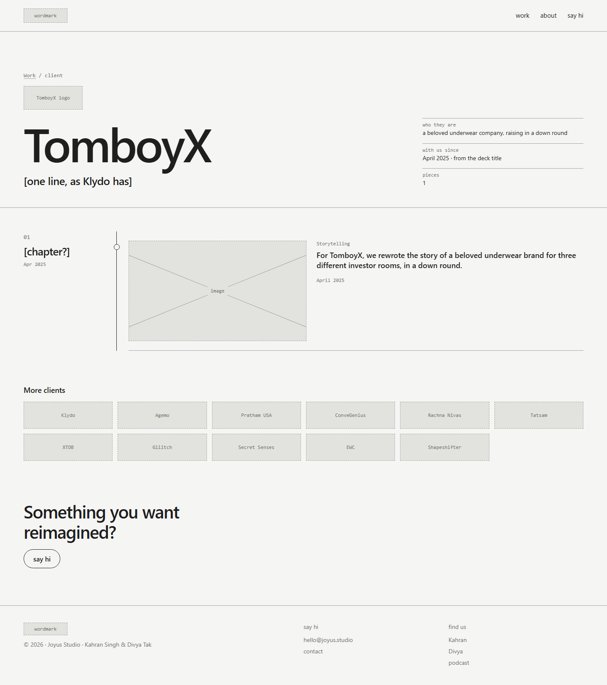
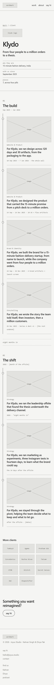
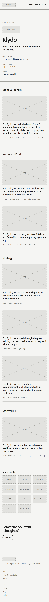

Study 06 · 1 October 2026
The client page
Everything Joyus did for one client. Reached from the logo wall, from a piece page's crumb and client fact, and from "Also for <client>". One decision: in what order the pieces appear. It's round 1's "by kind / by time" toggle again, which Divya cut from the homepage, here asked where it matters and answered once, without a toggle. Built with Klydo, seven pieces. Then a second finding: most clients shouldn't have this page at all.
The parts
| Part | What it is | Leads to | Why |
|---|---|---|---|
| Name + one line | "Klydo", then From four people to a million orders to a thesis. | — | The line is Kahran's, verbatim from work/klydo.html. The old case study's job, in one sentence. |
| Facts | who they are · with us since · how many pieces | — | Orientation before the list. |
| Piece cards | image, pill, the homepage sentence, dates | Piece pages | The homepage panel, shrunk. Same sentence everywhere: the homepage, the piece page's headline, this card. |
| More clients | the other eleven logos | Client pages, or straight to a piece (the rule below) | Sideways, client to client, without going back to the homepage. |
The decision: by time, or by pill
A · By time
A rail, oldest first, in two chapters. Open A

B · By pill
Four groups, in homepage pill order. Open B

A found Kahran's structure on its own. Sorting the seven pieces by their start dates (taken from the wall's day numbers) splits them cleanly: product, design, branding and storytelling between Sep 2025 and Jan 2026; strategy, marketing and pivot support "eight months in". That is exactly the two chapters work/klydo.html already tells, "01 The build" and "02 The shift", so A uses his chapter names, whole. The client page becomes the historical layer at the scale of a relationship: what Joyus did first, what it was asked back for.
B repeats the homepage. Grouping by pill re-sorts Klydo by the axis the homepage already offers, and with seven pieces across four pills, two groups hold a single card. It also puts the offsite next to the pivot and marketing work without saying they came eight months after everything else.
Recommendation: A. It's the only view of the work no other page gives. The pill each piece belongs to is still on every card.
Most clients don't need this page
Counted from the data (Study 03's 27 pieces of client work):
| Client | Pieces | Gets a client page? |
|---|---|---|
| Klydo | 7 | yes |
| Tatsam · Agemo / Codewords · Rachna Nivas | 3 each | yes |
| EWC · ConveGenius · Pratham USA | 2 each | yes |
| Secret Senses · Gliitch · XTDB · TomboyX · Shapeshifter | 1 each | no logo goes straight to the piece |

The rule: a client gets a page only with two or more pieces. Seven client pages, not twelve. On the logo wall and in "More clients", the five one-piece logos link straight to their piece; the piece page's client fact for them is plain text. This changes Study 03 (it said 12 client pages, every logo to a client page); Study 03 stays as written and this study records the change.
On a phone


Found on the way
Four of the seven pieces are barely dated. Klydo · storytelling has one dated artifact (Series A deck v1, 26 Dec 2025); Klydo · strategy, marketing and pivot support have only "eight months in". The first draft gave those three a start of May 2026, worked out from "eight months". That's arithmetic, not a source; it now says 2026 and the offsite month is marked as missing.
"Marketing" may be two different things. The homepage sentence is the 2026 Instagram experiments. But the 2025 wall has six GTM artifacts too: CAC:LTV models, an acquisition plan, the Diwali launch plan, a holiday campaign. Either they belong in Klydo · marketing or they're an eighth piece. Kahran's call.
B's cards didn't line up. In a row, shorter cards' text sat lower: each card's inner grid stretched to the tallest card. Fixed with align-content: start.
The test
node studies/iterations/06/check.cjs: for A and B, all seven Klydo pieces appear once, each with its homepage sentence unchanged, each linking to a piece page; the eleven other clients are listed, and each links by the rule (two or more pieces → client page, one → the piece). For A: pieces run in start-date order, and the three start dates the wall can prove (design, product, branding) equal their first artifact's day on the wall; Kahran's line and chapter names are found verbatim in work/klydo.html. For B: groups in homepage pill order, pieces in homepage order inside them. A and B are identical outside the body. The TomboyX page has one card because the data has one piece.
Broken on purpose: branding moved a day later, and XTDB's logo pointed at a client page. Three failures (the two, plus A no longer matching B). Restored, passes.